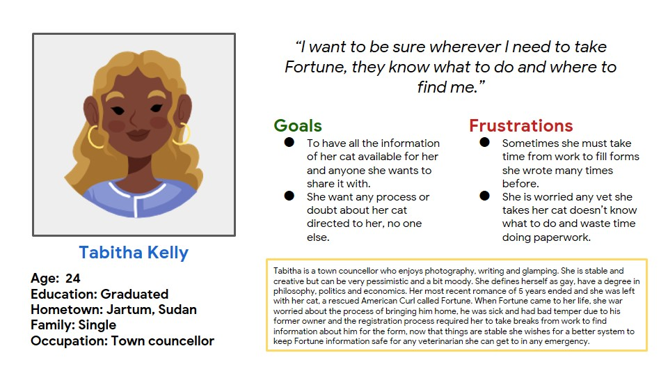
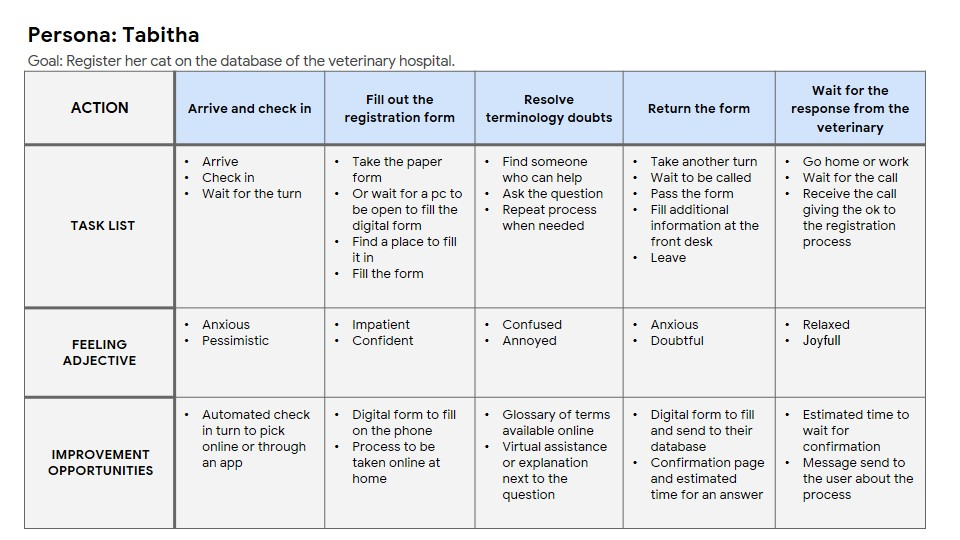
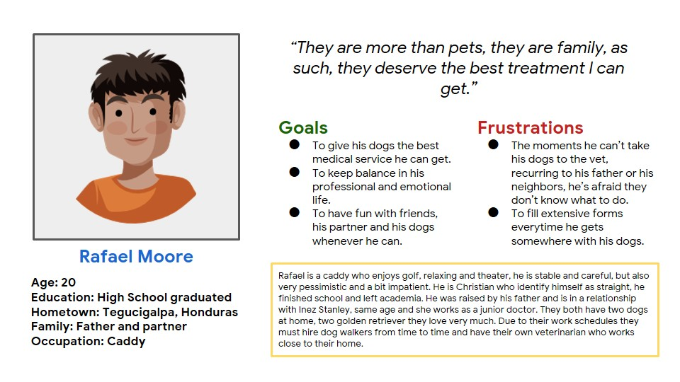
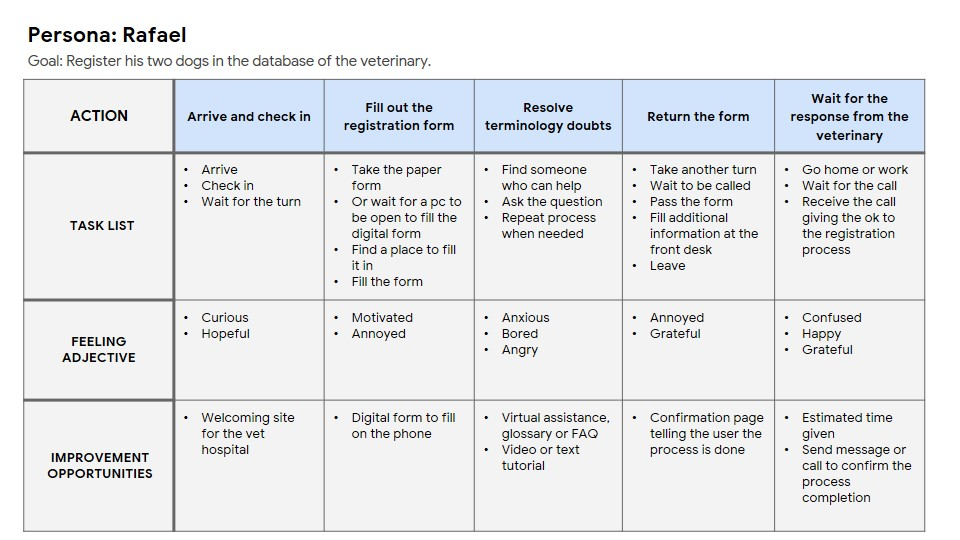
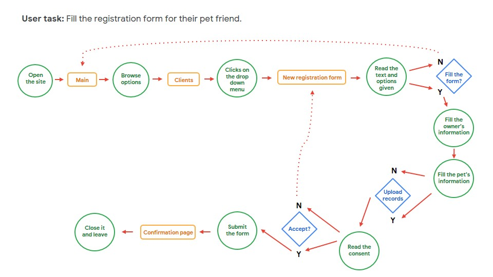

DETALLES DE PROYECTO
Tipo de proyecto: Proyecto personal.
Mis roles: Investigador - Entrevistador - Diseño UX - Diseño visual - Prototipos.
Duración: Agosto a Septiembre 2022.
Herramientas: Figma.
La pagina fue desarrollada para el cliente VetSite, un hospital veterinario que busca una plataforma para el registro de mascotas para los usuarios, la cual pueda almacenar la información y proveer esa información a otras veterinarias o servicios de registro.
EL PROBLEMA
Los clientes con mascotas encuentran el proceso de registro de mascotas algo sumamente necesario pero tedioso, debido al manejo de las plataformas que emplean uno preestablecido que es largo y, aunque completo, no ofrece un atractivo visual o motivación al cliente para llenarlo, en especial si debe hacerlo en la institución prestadora de salud animal.
EL OBJETIVO
Proporcionar al hospital veterinario VetSite con un sitio web personalizado para que los usuarios puedan hacer el registro de sus mascotas con la mayor asistencia posible y que no produzca tedio o estrés en caso tal deba llenarse el formulario en el hospital veterinario.
INVESTIGACIÓN
El objetivo de la investigación es encontrar las necesidades y experiencias de los usuarios con soluciones previas ajenas al proyecto, este proceso se repitió con las propuestas iniciales de la aplicación, mediante entrevistas no moderadas, se hicieron estos hallazgos:
- Preferencia del formulario digital: La mayoría de usuarios prefieren llenar formularios en línea o frente a una pantalla, en vez de los tradicionales formatos en papel.
- Procesos largos de registro: A todos los usuarios les incomoda el tiempo que demora el registrar sus mascotas o documentos relacionados, incluido el tiempo de espera para que sea guardado en su plataforma.
- Conocimiento médico: Todos los usuarios tienen dudas sobre términos médicos que deben llenar en los formularios, en ocasiones no saben que deben poner o que significan.
Personas + Mapa de proceso
Los resultados de las entrevistas ayudaron a desarrollar dos Personas. Con ello, para entender mejor su situación, se creó un mapa del proceso que siguen los usuarios en una página para registrar sus mascotas.
    Definición e ideación
Después de hacer el trabajo de investigación y entrevistas, los resultados mostraron la necesidad de hacer el proceso de registro más fácil y presentar el formulario en un formato agradable a la vista del usuario:
- Para una gran parte de los usuarios el formato del formulario es genérico, por ello se propone darle identidad de marca y elementos interactivos que sean de agrado para los usuarios.
- La mayoría de usuarios preguntan si la información proporcionada es valida en otros hospitales veterinarios, para eso se dan preguntas presentes en todos los formatos requeridos y medios para compartir la información sea en línea o un documento para imprimir.
- La mitad de los usuarios tienen dudas sobre términos médicos para mascotas por lo que se dará acceso a información y asistencia por parte de profesionales del área.
Como el sitio web puede mejorar las situaciones de:
TABITHA
- Se presenta la opción de llenar el formulario en su propio tiempo, guardando la información por partes hasta completar el formulario otro día.
- El formato cubre la gran mayoria de dudas que puedan tener los veterinarios.
RAFAEL
- El formato proporciona información importante en un formato fácil de leer para quien lo requiera y pueda compartir con otros en línea.
- El formato quedará guardado en la base de datos de VetSite y el usuario puede descargar una copia para llevar consigo.
DESARROLLO: WIREFRAMES
DESARROLLO: MAPA DEL SITIO
Se realizaron dos test de usabilidad a 4 participantes cada sesión, los resultados fundamentaron los cambios definitivos en el desarrollo del sitio web.
DESARROLLO: PROPUESTA FINAL
DESARROLLO: NAVEGACIÓN

Reflexiones
El proceso varía considerablemente para la creación del sitio web, ya que se piensan en otros tamaños de formatos al igual que permite ver más opciones de personalización. El análisis de la información con personas que comparten interes como conocimiento de la labor es la mejor experiencia y aumenta el sabeer para proyectos a futuro, en esta profesión cada cliente ofrece un desafio distinto pero excitante.